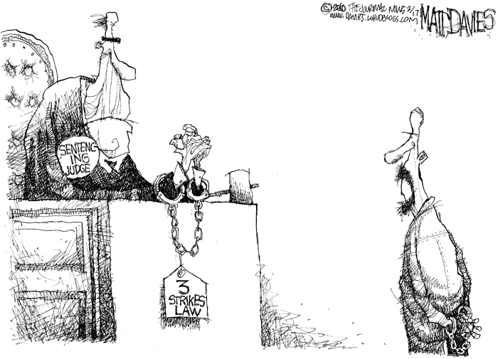
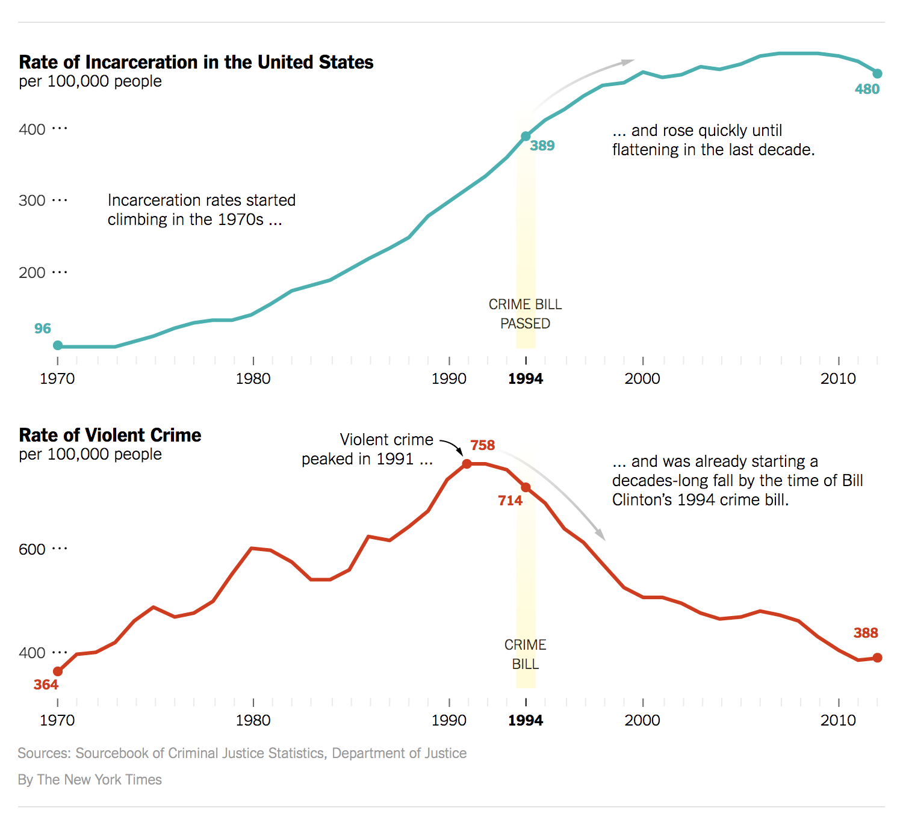
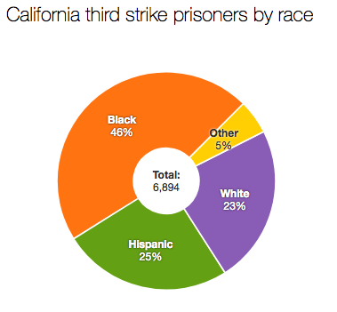

HCP Presentation 👨🏽🏫
by Kamesh Vedula
3 Strikes and You're Out:
the Realities of Mandatory Minimums.
Brief History
Violent Crime Control and Law Enforcement Act of 1994
Mandatory Minimums
Three Strikes Laws

a judge being forced to give a life sentence.

statistics on rate of incarceration and crime b/w 1970 & 2010

pie chart of prisoners in California in 2014
Thesis
The increaed implementation and harshness of mandatory minimum laws such as the 3 strikes laws are made to lock people up even when their crimes are not violent, ultimately causing the United State's problem with mass incarceration.
Outline
History of Mandatory Minimums
Delve into 3 Strikes Laws and their Social and Political Effects
Examples of Mandatory Minimum and 3 Strikes laws victims
Show the problem still exists to this day
Fuchs, Erin. “10 People Who Received Outrageous Sentences For Drug Convictions.”Business Insider, Business Insider, 23 Apr. 2013, www.businessinsider.com/10-most- outrageous-mandatory-minimum-2013-4.
Marshall, P. (2002, May 10). Three-strikes laws. CQ Researcher, 12, 417-432. Retrieved from http://library.cqpress.com/